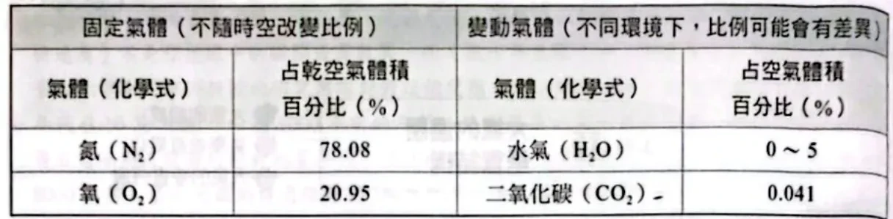
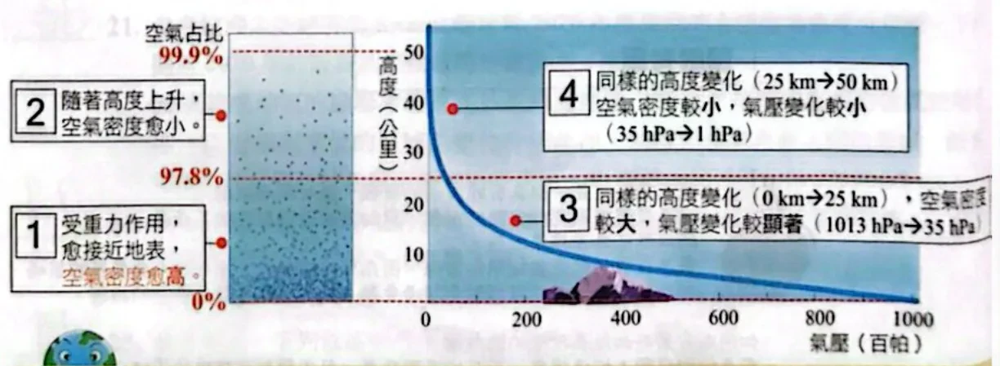
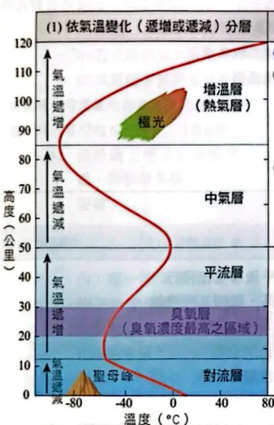
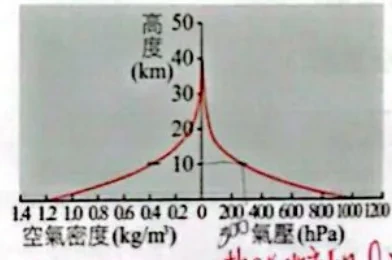
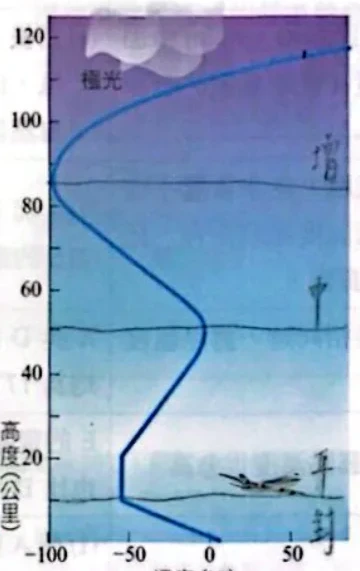
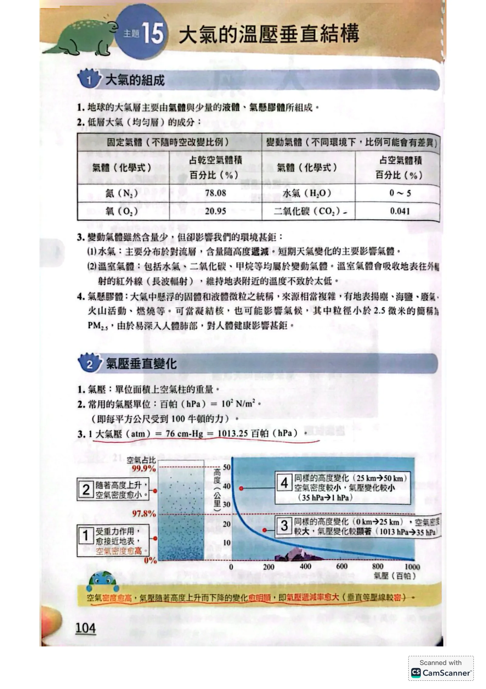
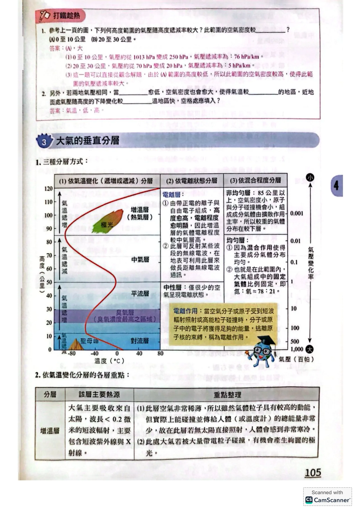
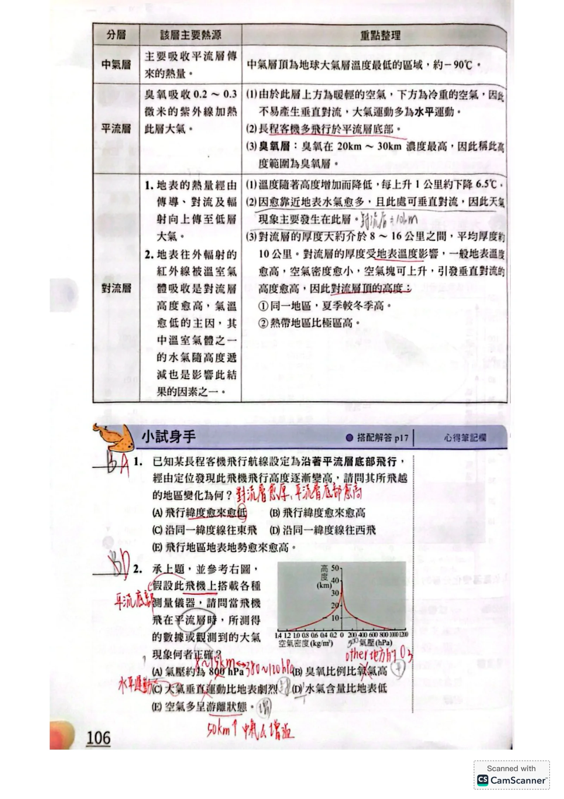
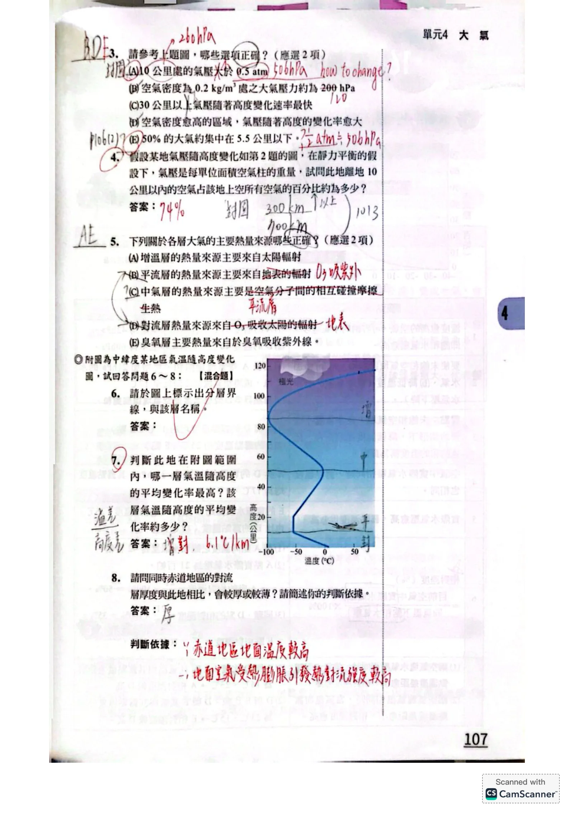

空氣的成分：含量多，不一定影響最大
從海邊爬上高山，會覺得呼吸變吃力。是氧氣在空氣中的比例大幅下降，還是每次吸進來的空氣總量減少？先把這兩件事分開，後面才不會把成分、密度和氣壓混在一起。
在低層、充分混合的大氣中，乾空氣的氮氣約占 78%，氧氣約占 21%，其餘以氬氣等少量氣體為主。「乾空氣」是指先排除水氣，再計算各氣體的比例；加入水氣後，各成分占整團濕空氣的百分比會受到稀釋。

先看表頭：固定氣體的比例以「乾空氣」為基準原講義PDF第2頁・印刷第104頁・點圖放大
| 比較對象 | 成分怎麼變？ | 在環境中做什麼？ |
|---|
| 固定氣體 | 在低層混合大氣中，氮、氧等氣體的相對比例大致穩定 | 構成空氣的主要部分；氧氣參與呼吸等作用 |
|---|
| 水氣 | 隨地點、季節、高度而變；通常近地面較多 | 與雲雨、水循環及溫室效應有關 |
|---|
| CO₂、甲烷等 | 屬變動氣體，含量也會隨時間改變 | 能吸收、放射特定波段的紅外線，影響能量收支 |
|---|
| 氣膠 | 懸浮的固體微粒或液滴；包含海鹽、揚塵、煙塵等 | 可散射或吸收輻射，部分可當雲凝結核 |
|---|
原表列出的CO₂百分比是教材當時的數值，不是永久常數；本節要掌握的是「少量、會變動、能影響紅外線收支」。PM₂.₅是細懸浮微粒的粒徑分類，不是某一種氣體。
氣壓：測量位置上方，還壓著多少空氣？
把一平方公尺的地面想成一塊底板，上方一直延伸到大氣頂端的空氣就是一根空氣柱。在近似靜力平衡時，底板承受的氣壓，可由這根空氣柱的重量除以底面積來理解。
氣壓＝上方空氣柱的重量 ÷ 底面積
1 Pa＝1 N/m²；1 hPa＝100 Pa。
標準大氣壓：1 atm＝1013.25 hPa＝76 cmHg。
往山上走時，測量位置下方那一段空氣已不在「頭頂上」；剩下的空氣柱重量變小，所以氣壓通常隨高度上升而降低。這個變化不是因為高空完全沒有重力，也不是空氣到了某一層就突然消失。
為什麼低空降得快，高空降得慢？
比較相同厚度、相同底面積的兩片空氣：低空通常較密，這一片裡的空氣質量較大；高空較稀薄，同樣厚度裡的質量較小。因此，穿過低空同樣一公里，少掉的空氣重量通常較多，氣壓降幅也較大。

高度增加時氣壓下降；相同高度差，在低空的氣壓差較大原講義PDF第2頁・印刷第104頁・點圖放大
原講義的暖身題：算一次，確認自己讀對軸
PDF第3頁比較0–10公里與20–30公里：前者氣壓約由1013降至250 hPa，後者約由70降至20 hPa。兩段高度差同為10公里，平均降幅分別是 (1013−250)÷10≈76.3 hPa/km 與 (70−20)÷10＝5 hPa/km。所以低空這一段的平均密度較大。
若比較氣壓相同、成分相近的兩團空氣，較冷的一團密度較大，在相近條件下其垂直氣壓降幅也較大。這裡「氣壓相同」很重要；只給溫度，不能直接判斷所有地點的密度大小。
讀氣壓曲線：先看軸，再算空氣占比
原圖把高度放在縱軸、氣壓放在橫軸。因此不要只看曲線在紙上「陡不陡」就判斷氣壓變化率；應先選一段高度差，讀出對應的氣壓差，再算 氣壓差÷高度差。橫、縱軸對調，線條的外觀也會改變。
用兩個氣壓，求中間那一層空氣的質量
設地面氣壓是 p₀，高度z的氣壓是 pz。在同一底面積、重力近似不變的情況下，地面氣壓對應整根空氣柱；高處氣壓對應z以上的空氣柱。兩者相減，就得到地面到z之間空氣的重量。
| 想求哪一段？ | 占整根空氣柱的質量比例 |
|---|
| z以上 | pz / p₀ |
| 地面到z之間 | (p₀−pz) / p₀ |
例如某高度的氣壓約為地面的1/2，就代表約一半大氣質量在該高度以上，另一半在其以下。這是質量比例，不是把大氣的高度平均切成兩半，也不是說一半空間被空氣填滿。
三種分層：每次都先說「依什麼分」
同一個高度，可以同時屬於「平流層」和「均勻層」，這並不矛盾：前者依氣溫變化分類，後者依成分混合程度分類。它們是在回答不同的問題。
| 分類標準 | 名稱 | 真正比較的量 |
|---|
| 氣溫隨高度變化 | 對流層、平流層、中氣層、增溫層 | 往上走，溫度是降還是升？ |
|---|
| 電離狀態 | 中性層、電離層 | 是否有較多自由電子、帶電粒子？ |
|---|
| 成分混合程度 | 均勻層、非均勻層 | 主要氣體的相對比例，是否因混合作用而大致穩定？ |
|---|
原講義以約85公里作為均勻層與非均勻層的示意分界。下方混合作用較有效，主要固定氣體比例大致均勻；上方分子擴散的相對重要性增加，不同氣體會呈現不同的高度分布。
電離層則包含不同的電離區域，範圍會隨日夜與太陽活動變動，並跨越依溫度劃分的層。它能影響某些頻段的無線電波傳播；不能把「電離層」當成增溫層的完全同義詞，也不能說所有無線電波都會被它反射。
四層的溫度：用熱源理解「降、升、降、升」
沿原圖從地面往上看，紅線依序向低溫、高溫、低溫、高溫移動。先認出趨勢轉換的位置，再標示各層；不要只背固定高度，因為分界會隨緯度、季節與大氣狀態改變。

原講義的氣溫剖面：沿高度由下往上，依序讀降、升、降、升原講義PDF第3頁・印刷第105頁・點圖放大
| 由下往上 | 溫度的一般趨勢 | 要連起來理解的原因與現象 |
|---|
| 對流層 | 隨高度增加而降低 | 地表吸收太陽能後加熱低層大氣；水氣較多，天氣與垂直對流主要在此 |
|---|
| 平流層 | 上部明顯隨高度增溫 | 臭氧吸收太陽紫外線加熱；平均結構較穩定，不利強烈垂直對流 |
|---|
| 中氣層 | 隨高度增加而降低 | 臭氧加熱較弱、輻射冷卻等作用影響收支；中氣層頂是平均剖面的低溫區 |
|---|
| 增溫層 | 隨高度增加而升高 | 稀薄氣體吸收高能量太陽輻射，包括極紫外線與X射線；與高空電離、極光有關 |
|---|
對流層：6.5°C/km是平均環境遞減率
教材常用每上升1公里下降約6.5°C，描述對流層的平均環境氣溫。例如地面20°C，若題目明定依此遞減率，2公里處約為 20−6.5×2＝7°C。這不是所有地點、所有時刻的固定規律，也不是下一節要討論的上升空氣塊乾、濕絕熱遞減率。
局部若出現氣溫隨高度升高的逆溫，仍可能位於對流層內；不能看到一小段增溫，就直接宣布它是平流層。
平流層：臭氧吸收的是太陽紫外線
平流層的臭氧吸收紫外線，使上部大氣較暖，因而形成穩定的平均溫度結構。臭氧層不是固體殼，也不是純臭氧，而是臭氧含量相對集中的高度範圍。原講義以約20–30公里標示其主要區域。
增溫層：粒子快，不等於整團氣體能大量傳熱
溫度反映粒子的平均動能。增溫層的粒子平均動能可以很高，但空氣極稀薄，和物體碰撞的粒子很少；因此高氣溫不能直接等同於很強的接觸加熱。物體在高空的溫度還受日照、放射散熱等能量交換控制。
原講義把中氣層熱源濃縮成「平流層傳來的熱量」，並用「寒冷」描述稀薄高空的感受。本頁改由能量收支、粒子密度說明，避免將示意表當作唯一機制，或把高空物體溫度直接等同周圍氣體溫度。
對流層頂：熱帶通常高，極區通常低
對流層頂是對流層和平流層之間的過渡界面。較暖的熱帶，對流活動通常能延伸到較高處；較冷的極區，對流層通常較薄。同一地區的夏季對流層頂，也通常高於冬季。
| 一般比較 | 對流層頂較高 | 對流層頂較低 |
|---|
| 不同緯度 | 熱帶 | 極區 |
| 同地不同季節 | 夏季 | 冬季 |
原題設定飛機沿「平流層底部」飛行，等於讓飛機跟著對流層頂附近走。若飛行高度逐漸升高，在題目的簡化比較下，就應想到飛向較低緯度、較暖的地區。單說向東、向西，或地面地勢變高，不能推出同樣結論。
一架長程客機依題意沿平流層底部飛行，定位發現飛行高度逐漸升高。下列哪一項最能解釋這項變化？
- 飛行緯度越來越低。
- 飛行緯度越來越高。
- 沿同一緯度線往東飛。
- 沿同一緯度線往西飛。
- 下方地表地勢越來越高。
看答案與詳解收起
答A，飛行緯度越來越低。
解題目不是問飛機自己爬升的原因，而是要把「平流層底部的高度」和「緯度」連起來。
- 平流層底部鄰接對流層頂。
- 一般而言，低緯度較暖、對流層較厚，所以對流層頂較高。
- 沿這個界面飛行而高度上升，符合由高緯度往低緯度移動的簡化情境。
B是相反趨勢。C、D只改經度，沒有提供足以判斷層界升高的條件；E的地形高度也不能直接決定大範圍的對流層頂高度。
小結先把航線條件翻譯成「跟著對流層頂走」，再比較緯度。
承上題，飛機位於平流層。下列哪項敘述正確？
- 氣壓約為800 hPa。
- 臭氧所占比例比氧氣高。
- 大氣垂直運動比地表附近劇烈。
- 水氣含量比地表附近低。
- 空氣多呈游離狀態。
看答案與詳解收起
答D，水氣含量比地表附近低。
解水氣主要集中在低層對流層，進入平流層的空氣通常很乾，所以D符合本題條件。
| 選項 | 判斷理由 |
|---|
| A | 800 hPa仍是較低空的氣壓，與題設平流層不合；應依圖中高度讀對應氣壓。 |
| B | 臭氧雖在此相對集中，仍是微量氣體，不會超過約21%的氧氣。 |
| C | 平流層平均結構穩定，強烈垂直對流通常較不發達。 |
| E | 平流層的空氣仍主要為中性，不能把它當成高空電離區。 |
小結「臭氧較集中」是在比較不同高度的臭氧，不是在說臭氧多過氧氣。
原講義判圖：把觀念用在刻度和選項上
接下來使用原講義小試題共用的氣壓、密度圖。先確認縱軸是高度；底部左半邊讀密度、右半邊讀氣壓。對準同一高度，再各自讀取曲線，不要把兩組單位混用。

原題共用圖：高度對氣壓、空氣密度的變化（底部左右刻度不同）原講義PDF第4頁・印刷第106頁・點圖放大
依上方氣壓、密度共用圖，選出正確的兩項。
- 10公里處的氣壓大於0.5 atm。
- 空氣密度為0.2 kg/m³處，大氣壓力約為200 hPa。
- 30公里以上，氣壓隨高度變化速率最快。
- 空氣密度越高的區域，每單位高度的氣壓變化量越大。
- 50%的大氣質量約集中在5.5公里以下。
看答案與詳解收起
答D、E。B的圖上讀值約100–120 hPa，並非200 hPa。
解- A：0.5 atm約507 hPa，圖中10公里氣壓僅約地面的1/4，低於0.5 atm。
- B：先用左方密度刻度找到0.2，再沿曲線找高度，約在15公里附近；同高度轉讀氣壓曲線，約100–120 hPa。不能把密度0.2直接當作0.2 atm。
- C：高空空氣較稀薄，相同高度差的氣壓降幅通常較小。
- D：在靜力平衡與重力近似相同時，同厚度較密的空氣層重量較大，所以氣壓差也較大。
- E：約5.5公里氣壓為地面的一半，因此約一半大氣質量在其下。這裡的50%指質量。
小結密度、氣壓是兩條不同刻度；轉讀時要守住「同一高度」。
在靜力平衡的假設下，依同一張圖估計：距地面10公里以內的空氣，占此地上空整根空氣柱質量的百分比約為多少？
看答案與詳解收起
答約75%；圖讀值有誤差，約74–76%皆接近。
解先辨別上下：10公里處的氣壓表示「10公里以上」那段空氣的重量，題目卻問「10公里以下」。
以圖上地面約1000 hPa、10公里約250 hPa估算：
10公里以下占比＝(1000−250)÷1000＝0.75＝75%。
若依另一頁標示採地面1013 hPa、高空250 hPa，則為 763÷1013≈75.3%；若原圖讀值略不同，結果會有小差異。原頁手寫74%不必當成精確常數。
若直接用250÷1000＝25%，求到的是10公里以上，剛好和題目相反。
小結先算上方剩多少，再用總量扣掉，才是指定高度以下。
下列關於各層大氣主要加熱來源的敘述，哪兩項正確？
- 增溫層的主要加熱來源是太陽輻射。
- 平流層的主要加熱來源是地球的輻射。
- 中氣層主要靠空氣分子相互碰撞摩擦產生熱量。
- 對流層主要靠臭氧吸收太陽輻射加熱。
- 臭氧層主要由臭氧吸收紫外線加熱。
看答案與詳解收起
答A、E。
解A與E都抓到哪些粒子吸收哪一種外來輻射：增溫層吸收高能太陽輻射；臭氧吸收太陽紫外線，為平流層的重要加熱機制。
B把平流層和對流層的主要熱源混淆。D則反過來把臭氧的紫外線加熱套到對流層；對流層與地表供熱、地表長波輻射的吸收等密切相關。
C沒有交代能量從哪裡來。分子間碰撞會交換能量，不能單憑「互相碰撞」就說是此層持續產生淨熱能的主要來源。
小結解熱源題，不只說「有熱」；要追問能量原本來自哪裡、由什麼吸收。
最後換成氣溫剖面。這次橫軸是溫度，不再是氣壓；先沿曲線由下往上辨認轉折，再處理分層與平均變化率。

原題6–8的中緯度氣溫剖面；分層界線應由溫度趨勢判讀原講義PDF第5頁・印刷第107頁・點圖放大
依上方中緯度氣溫圖，回答原題6–8。
- 標出對流層、平流層、中氣層、增溫層及其界線。
- 圖示範圍內，哪一層氣溫隨高度的平均變化率最大？約為多少？
- 同時期赤道地區的對流層，比圖示中緯度地區厚還是薄？說明理由。
看答案與詳解收起
答①由下而上為對流、平流、中氣、增溫層，界線約10、50、85公里。②增溫層；圖上粗估約6°C/km，合理近似約6–7°C/km。③赤道通常較厚。
解第6題：先找轉折，不先背高度
0到約10公里，溫度下降，是對流層；約10公里附近開始轉為等溫、再增溫，進入平流層。約50公里轉為降溫，進入中氣層；約85公里附近溫度最低，再往上增溫，屬增溫層。界面依序為對流層頂、平流層頂、中氣層頂。
第7題：用同一層兩端的讀值
原圖增溫層由約85公里、−95°C，到圖示頂端約118公里、+100°C，平均溫度變化率約 [100−(−95)]÷(118−85)≈5.9°C/km。端點線條粗、讀值不同，約6–7°C/km是合理估讀；原頁手寫6.7°C/km屬另一組近似讀值，不是必須背出的精確常數。
作比較時，圖中對流層約由0公里的+5°C降至10公里的−55°C，降溫幅度約6°C/km；增溫層上端的實際讀值接近圖界，兩者可能非常接近。因此原題預期答增溫層，但不要僅憑粗圖和小數差宣稱精確大小。若題目給精確端點，應重新計算；若比較帶正負號的變化率，增溫為正、降溫為負，也須先說清比較定義。
第8題：比較層界高度
赤道一般接收較多太陽能，低層較暖、對流可延伸到較高處，對流層頂通常比中緯度高，所以對流層較厚。這是一般緯度差異，並非任意地點每一天都必須符合的固定高度表。
小結分層看溫度轉折；變化率看端點與單位；圖讀值的精確度不能超過原圖。
本單元整理：看到題目，先判斷它在問哪個量
| 題目線索 | 先做的事 | 常見誤判 |
|---|
| 高山缺氧 | 分清氧氣比例、總氣壓與氧分壓 | 把21%大致不變誤當供氧條件不變 |
|---|
| 氣壓隨高度變化 | 用氣壓差÷高度差，比較相同厚度的空氣 | 只看紙上曲線陡緩，不看座標方向 |
|---|
| 某高度以下大氣占比 | 用兩氣壓之差，再除以地面氣壓 | 算成該高度以上，或當成高度比例 |
|---|
| 分層名稱 | 先問依溫度、電離或混合程度分類 | 以為電離層＝增溫層＝非均勻層 |
|---|
| 溫度剖面 | 找溫度趨勢轉折與各層熱源 | 把6.5°C/km套到全部大氣 |
|---|
讀完本節，應能用「上方空氣柱」解釋氣壓，用「吸收哪裡來的能量」理解各層溫度，再用題目給的剖面讀值。下一節將把對流層中的水氣接上雲與雨：空氣上升降溫以後，什麼時候開始凝結？
核對原講義全頁（地科2 PDF2–5）
本節對應印刷104–107頁。原頁保留手寫筆記；以本頁推導與題目條件核對，不把手寫選項當作答案依據。

PDF第2頁／印刷第104頁
PDF第3頁／印刷第105頁
PDF第4頁／印刷第106頁
PDF第5頁／印刷第107頁延伸核對：美國國家氣象局：大氣與天氣教育；環境遞減率、逆溫與各層溫度。